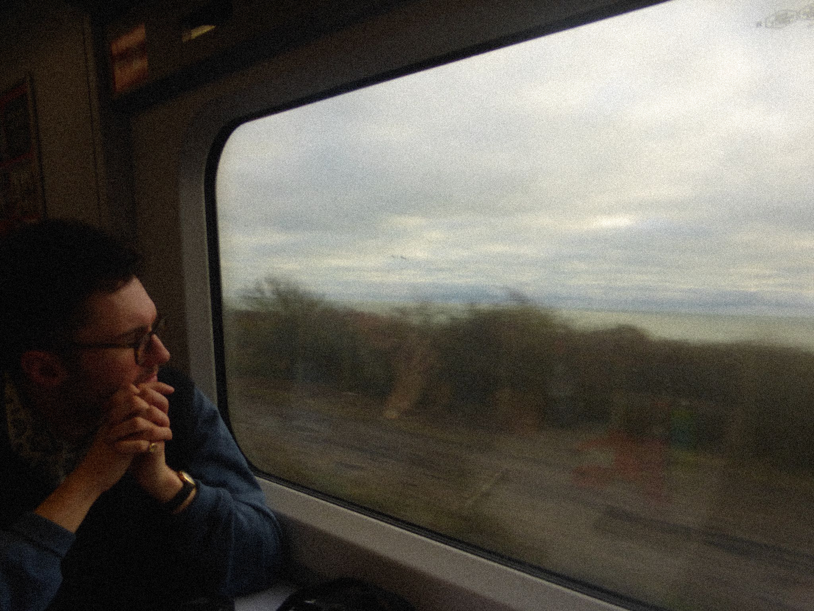

I am an experienced Mechanical Maintenance Technician and Product Development Manager with a proven track record in manufacturing, product innovation, and operational leadership.
With over half a decade at Unipres UK, I gained invaluable experience working across key departments, developing strong technical expertise, a collaborative mindset, and a commitment to delivering customer-focused solutions.
As a Product Development Manager, I oversaw the day-to-day operations of sales and distribution at the company’s main workshop, liaising with suppliers and artisan craftsmen on key production and consultancy design projects.
I bring a results-driven approach, underpinned by trust, respect, integrity, and professionalism — equipping me to help businesses optimise value, achieve success, and deliver world-class products and services.